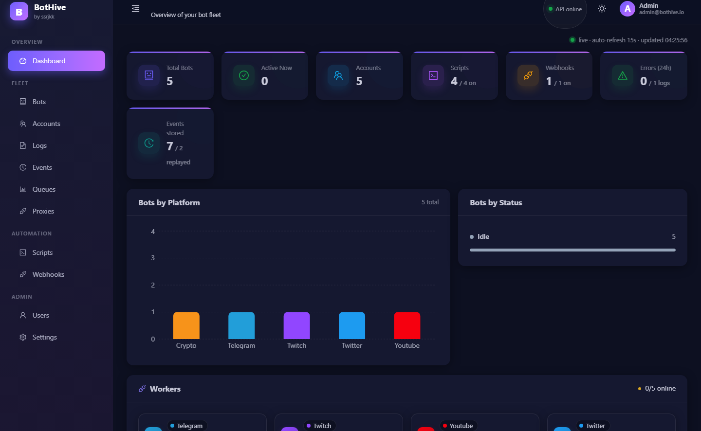
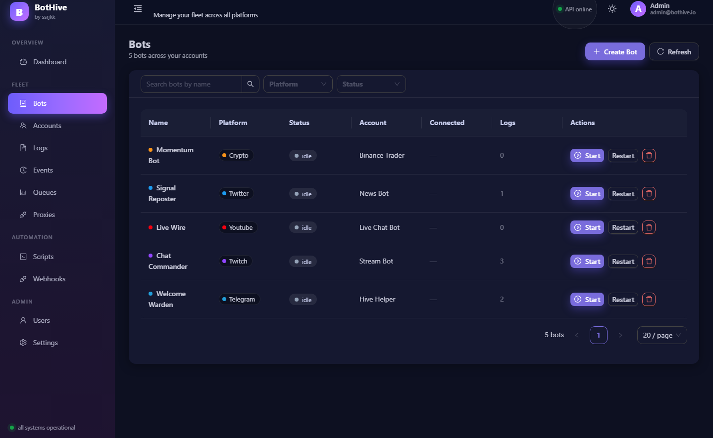
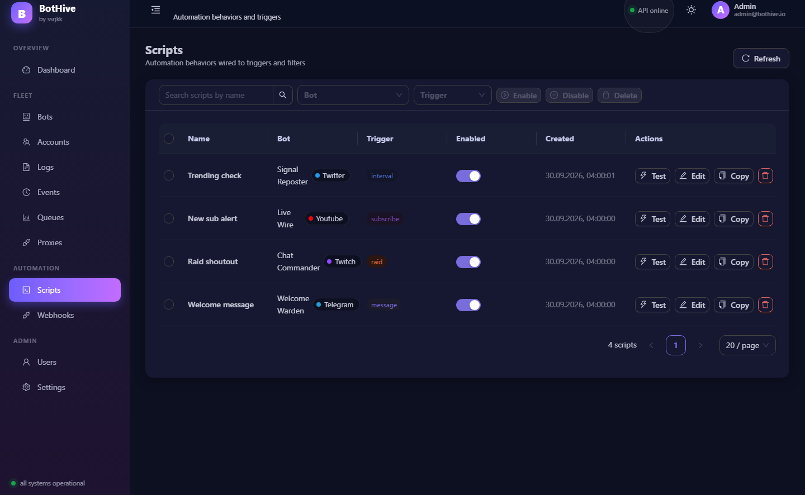
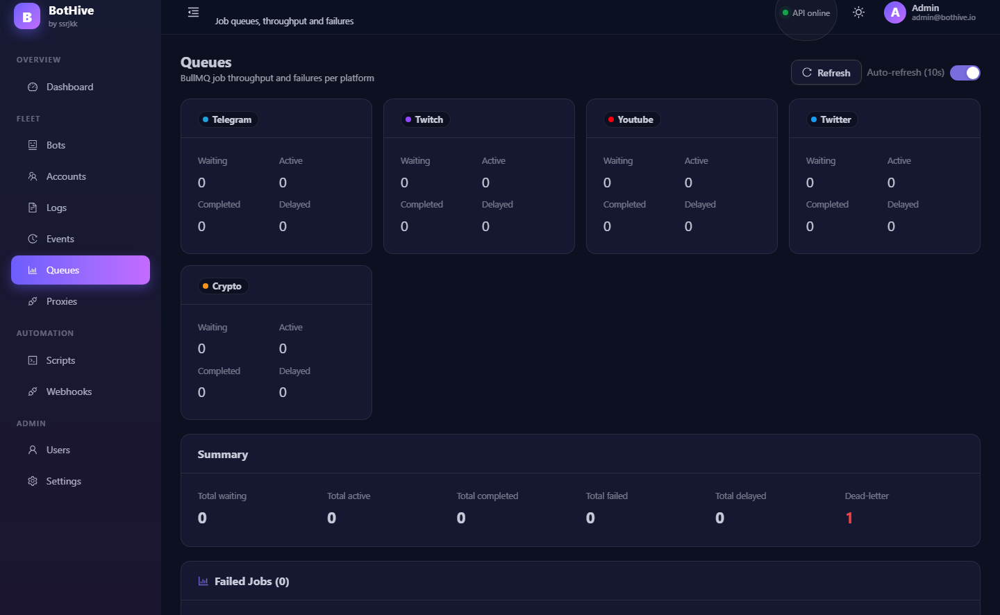
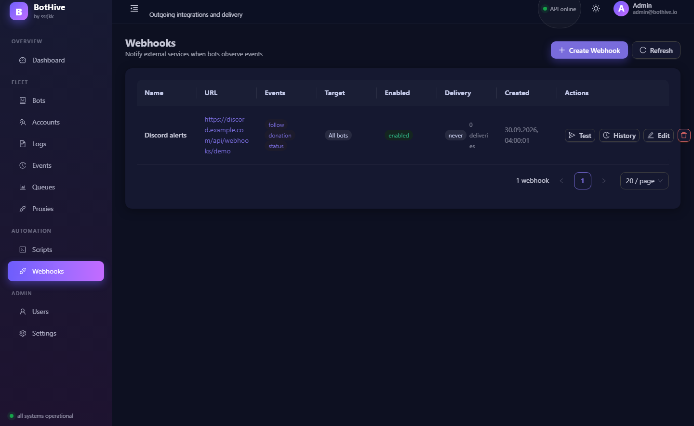

Один control plane
Подключение, отключение и любое действие бота — job в BullMQ. Перезапуск API или воркера не теряет управление.
queuesBotHive запускает ботов на восьми платформах из одного дашборда: общая очередь BullMQ, движок скриптов в песочнице, вебхуки с подписью и метрики Prometheus. Весь стек поднимается через Docker Compose.

Каждый воркер — отдельный процесс. Нажмите SIGKILL на любом: остальные не заметят, а упавший пройдёт backoff и восстановится.
Из коробки compose стартует telegram, twitch, youtube, twitter. Crypto — только профилем --profile crypto. Discord, slack, bluesky — тот же образ, другой --platform: node ./dist/index.js --platform discord.
Общий API, очередь, дашборд и движок скриптов. Каждый воркер живёт отдельным процессом и масштабируется независимо.
Подключение, отключение и любое действие бота — job в BullMQ. Перезапуск API или воркера не теряет управление.
queuesTelegram long-polling или webhook, Twitch IRC + Helix, YouTube LiveChat, Twitter v2, Discord, Slack, Bluesky. Crypto/Binance — отдельным профилем.
adaptersNode vm: process и require недоступны, бесконечные циклы убиваются таймаутом, fetch проверяет SSRF на каждом редиректе.
События уходят на ваш endpoint с HMAC-подписью X-BotHive-Signature. Приватные и loopback-адреса блокируются, доставка видна в телеметрии.
/metrics для Prometheus, готовый Grafana-дашборд, health-score каждого бота, глубина очередей и DLQ с replay.
Токены аккаунтов — AES-256-GCM. Пароли — scrypt с pepper. Роли admin/viewer читаются из БД на каждом запросе.
Скрипт прикрепляется к боту и срабатывает на событие платформы или таймер. Внутри — документированный API: сообщения, посты, реакции, HTTP-запросы и Redis-память.
Тёмная и светлая темы, ленивая загрузка страниц, admin-only разделы. Скриншоты сняты с запущенного дашборда.

start · stop · restart
trigger · test · clone
waiting · failed · DLQ
HMAC · delivery telemetryУпрощённый мок настоящего дашборда (React + antd). Переключите тему и роль: viewer блокирует мутирующие кнопки — так же, как API.
Один процесс на платформу: падение Telegram-воркера не останавливает Twitch, YouTube и остальных.
Масштабирование по платформам. docker compose up -d --scale workers-telegram=3 — остальные воркеры не трогаются.
Crypto выключен по умолчанию. Отдельный профиль --profile crypto; без него крипто-боты не делают ничего, и это ожидаемо.
/health/ready уходит в 503 и возвращается в 200.Повторы, идемпотентность и dead-letter очереди встроены в control plane, а не прикручены сбоку. Ниже — живой стенд: переключите механизм и запустите сценарий.
Resilience в core, а не в каждом адаптере отдельно
eventId из natural id: повторная доставка не запускает скрипт дважды./api/events/:id/replay.Модель безопасности из docs/security.md
viewer.admin управляет скриптами, очередями, вебхуками и бэкапами; viewer только читает.fetch блокируют приватные и loopback-адреса, включая редиректы.git clone, npm install — зависимости нужны для seed первого админа.
ENCRYPTION_KEY, PASSWORD_PEPPER, JWT_SECRET в .env.
Postgres, Redis, API, воркеры, дашборд, Prometheus и Grafana. Из коробки стартуют telegram, twitch, youtube, twitter; crypto — профилем --profile crypto.
npx prisma db seed → admin@botfarm.local / admin123. Пароль сменить сразу.
git clone https://github.com/ssrjkk/bothive.git cd bothive npm install # .env: ENCRYPTION_KEY, PASSWORD_PEPPER, JWT_SECRET cp .env.example .env # postgres, redis, api, workers, dashboard, # prometheus, grafana docker compose up -d --build # первый администратор npx prisma db seed
Grafana: admin/admin по умолчанию, меняется через GF_ADMIN_PASSWORD. Документация — github.com/ssrjkk/bothive/docs.